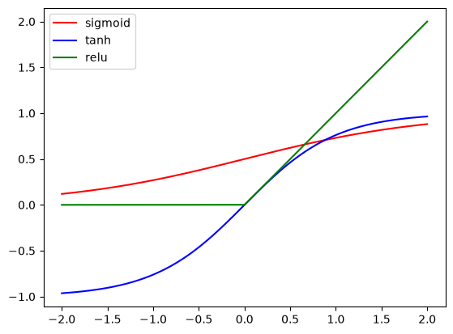

Akshat’s Notes
About
Categories
All
(3)
misc
(1)
ml
(2)

Object Recognition Using AlexNet
ml
In the previous blog post, we implemented Lenet-5, which was released in 1998. The Lenet series of models were extremely good for the task of digit recognition. However, the…
Feb 14, 2025
Digit Recognition Using Lenet
ml
In this post, we implement Lenet, widely acknowledged to be one of the first convolutional neural networks that was used in a practical setting, and also amongst the first…
Jan 12, 2025
Welcome!
misc
Hello! I’m Akshat. This is my first blog post, and also almost my first time sharing my writing on the internet. I like to read about almost anything that I can get my hands…
Dec 8, 2024
No matching items